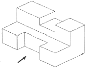
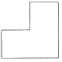
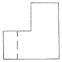
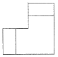
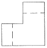
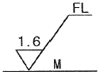
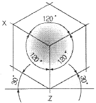
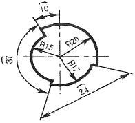
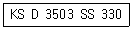
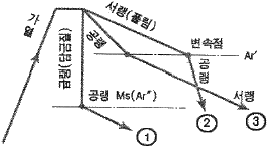

열처리기능사 (2014-01-26 기출문제)
1과목: 임의 구분
1. 비중으로 중금속(heavy metal)을 옳게 구분한 것은?
- 비중이 약 2.0 이하인 금속
- 비중이 약 2.0 이상인 금속
- 비중이 약 4.5 이하인 금속
- 비중이 약 4.5 이상인 금속
(정답률: 84%)

2. 표면은 단단하고 내부는 회주철로 강인한 성질을 가지며 압연용 롤, 철도 차량, 분쇄기 롤 등에 사용되는 주철은?
- 칠드 주철
- 흑심 가단 주철
- 백심 가단 주철
- 구상 흑연 주철
(정답률: 68%)
3. 자기 변태에 대한 설명으로 옳은 것은?
- Fe의 자기변태점은 210℃이다.
- 결정격자가 변화하는 것이다.
- 강자성을 잃고 상자성으로 변화하는 것이다.
- 일정한 온도 범위 안에서 급격히 비연속적인 변화가 일어난다.
(정답률: 74%)
4. 구조용 합금강과 공구용 합금강을 나눌 때 기어, 축 등에 사용되는 구조용 합금강 재료에 해당되지 않는 것은?
- 침탄강
- 강인강
- 질화강
- 고속도강
(정답률: 70%)
5. 다음 중 경질 자성재료에 해당되는 것은?
- Si 강판
- Nd 자석
- 센더스트
- 퍼멀로이
(정답률: 83%)
6. 비료 공장의 합성탑, 각종 밸브와 그 배관 등에 이용되는 재료로 비강도가 높고, 열전도율이 낮으며 용융점이 약 1670℃인 금속은?
- Ti
- Sn
- Pb
- Co
(정답률: 84%)
7. 고강도 Al 합금인 초초두랄루민의 합금에 대한 설명으로 틀린 것은?
- Al 합금 중에서 최저의 강도를 갖는다.
- 초초두랄루민을 ESD 합금이라 한다.
- 자연균열을 일으키는 경향이 있어 Cr 또는 Mn을 첨가하여 억제시킨다.
- 성분 조성은 Al-1.5~2%Cu-7~9%Zn-1.2~1.8Mg-0.3%~0.5Mn-0.1~0.4%Cr 이다.
(정답률: 71%)
8. Ni-Fe계 합금인 엘린바(elinvar)는 고급시계, 지진계, 압력계, 스프링 저울, 다이얼 게이지 등에 사용되는데 이는 재료의 어떤 특성 때문에 사용하는가?
- 자성
- 비중
- 비열
- 탄성률
(정답률: 78%)
9. 용융액에서 두 개의 고체가 동시에 나오는 반응은?
- 포석 반응
- 포정 반응
- 공석 반응
- 공정 반응
(정답률: 60%)
10. 전자석이나 자극의 철심에 사용되는 것은 순철이나, 자심은 교류 자기장에만 사용되는 예가 많으므로 이력손실, 항자력 등이 적은 동시에 맴돌이 전류 손실이 적어야 한다. 이 때 사용되는 강은?
- Si강
- Mn강
- Ni강
- Pb강
(정답률: 60%)
11. 황(S)이 적은 선철을 용해하여 구상흑연주철을 제조할 때 많이 사용되는 흑연구상화제는?
- Zn
- Mg
- Pb
- Mn
(정답률: 62%)
12. 다음 중 Mg에 대한 설명으로 옳은 것은?
- 알칼리에는 침식된다.
- 산이나 염수에는 잘 견딘다.
- 구리보다 강도는 낮으나 절삭성은 좋다.
- 열전도율과 전기전도율이 구리보다 높다.
(정답률: 69%)
13. 금속의 기지에 1~5μm 정도의 비금속 입자가 금속이나 합금의 기지 중에 분산되어 있는 것으로 내열 재료로 사용되는 것은?
- FRM
- SAP
- cermet
- kelmet
(정답률: 76%)
14. 열간가공을 끝맺는 온도를 무엇이라 하는가?
- 피니싱 온도
- 재결정 온도
- 변태 온도
- 용융 온도
(정답률: 87%)
15. 55~60%Cu를 함유한 Ni합금으로 열전쌍용 선의 재료로 쓰이는 것은?
- 모넬 메탈
- 콘스탄탄
- 퍼민바
- 인코넬
(정답률: 80%)
16. 다음 물체를 3각법으로 표현할 때, 우측면도로 옳은 것은? (단, 화살표 방향이 정면도 방향이다.)





(정답률: 85%)
17. 물품을 구성하는 각 부품에 대하여 상세하게 나타내는 도면으로 이 도면에 의해 부품이 실제로 제작되는 도면은?
- 상세도
- 부품도
- 공정도
- 스케치도
(정답률: 62%)
18. 다음 중 “ C”와 “SR"에 해당되는 치수 보조 기호의 설명으로 옳은 것은?
- C는 원호이며, SR은 구의 지름이다.
- C는 45도 모따기이며, SR은 구의 반지름이다.
- C는 판의 두께이며, SR은 구의 반지름이다.
- C는 구의 반지름이며, SR은 구의 지름이다.
(정답률: 84%)
19. 다음 그림 중에서 FL이 의미하는 것은?

- 밀링 가공을 나타낸다.
- 래핑 가공을 나타낸다.
- 가공으로 생긴 선이 거의 동심원임을 나타낸다.
- 가공으로 생긴 선이 2방향으로 교차하는 것을 나타낸다.
(정답률: 82%)
20. 척도 1:2인 도면에서 길이가 50mm인 직선의 실제 길이는?(오류 신고가 접수된 문제입니다. 반드시 정답과 해설을 확인하시기 바랍니다.)
- 25mm
- 50mm
- 100mm
- 150mm
(정답률: 75%)
2과목: 임의 구분
21. 나사의 호칭 M20×2에서 2가 뜻하는 것은?
- 피치
- 줄의 수
- 등급
- 산의 수
(정답률: 79%)
22. 다음 그림과 같은 투상도는?

- 사투상도
- 투시 투상도
- 등각 투상도
- 부등각 투상도
(정답률: 81%)
23. 다음 중 가는 실선으로 사용되는 선의 용도가 아닌 것은?
- 치수를 기입하기 위하여 사용하는 선
- 치수를 기입하기 위하여 도형에서 인출하는 선
- 지시, 기호 등을 나타내기 위하여 사용하는 선
- 형상의 부분 생략, 부분 단면의 경계를 나타내는 선
(정답률: 72%)
24. 도면에서 치수선이 잘못된 것은?

- 반지름(R) 20의 치수선
- 반지름(R) 15의 치수선
- 원호( ⁀ ) 37의 치수선
- 원호( ⁀ ) 24의 치수선
(정답률: 85%)
25. 다음의 단면도 중 위, 아래 또는 왼쪽과 오른쪽이 대칭인 물체의 단면을 나타낼 때 사용되는 단면도는?
- 한쪽 단면도
- 부분 단면도
- 전 단면도
- 회전 도시 단면도
(정답률: 73%)
26. 제도 용지 A3는 A4용지의 몇 배 크기가 되는가?
- 1/2배
- √2배
- 2배
- 4배
(정답률: 73%)
27. 다음 도면에 보기와 같이 표시된 금속재료의 기호 중 330이 의미하는 것은?

- 최저인장강도
- KS 분류기호
- 제품의 형상별 종류
- 재질을 나타내는 기호
(정답률: 87%)
28. 염욕으로 구비조건으로 틀린 것은?
- 흡습성이 없어야 한다.
- 점성이 커야 한다.
- 휘발성이 적어야 한다.
- 불순물의 함유량이 적어야 한다.
(정답률: 81%)
29. 가공열처리에 대한 설명으로 틀린 것은?
- 초강인강 제조에는 오스포밍이 이용된다.
- 소성가공과 열처리를 유기적으로 결합시킨 방법이다.
- 고장력강을 만들 때 결정립 조대화를 위해 제어압연방법을 사용한다.
- 독립적 열처리로 얻기 힘든 연성이나 인성을 향상 시키고자 할 때 이방법을 사용한다.
(정답률: 57%)
30. 다음 냉각제 중 냉각과정의 마지막 단계에서 서서히 냉각되어 균열이나 변형 위험이 감소하는 냉각제는?
- 물
- 기름
- 황산
- 소금물
(정답률: 65%)
31. 공구강을 구상화 풀림하는 목적이 아닌 것은?
- 인성 향상
- 기계가공성 향상
- 내마모(마멸)성 감소
- 담금질 균열 및 변형 방지
(정답률: 67%)
32. 마템퍼링에 대한 설명으로 틀린 것은?
- 유냉으로 경화되는 강은 마템퍼링을 할 수 없다.
- 일반적으로 합금강이 탄소강보다 마템퍼링에 더욱 적합하다.
- 마템퍼링은 균열에 대한 민감성을 감소시키거나 제거한다.
- 마템퍼링하는 동안 발달하는 잔류 응력은 기존의 담금질하는 동안 발달한 것보다 작다.
(정답률: 47%)
33. 담금질 제품의 변형을 방지하기 위하여 제품을 금형으로 누른 상태에서 구멍으로부터 냉각제를 분사시켜 담금질 하는 장치는?
- 유냉 장치
- 염욕 냉각장치
- 분사 냉각장치
- 프레스 담금질장치
(정답률: 73%)
34. 열처리 온도가 600~900℃인 경우에 사용되며, 탄소 공구강, 특수강 등의 열처리 또는 액체 침탄 등의 용도로 주로 사용되는 염욕로는?
- 저온용 염욕로
- 중온용 염욕로
- 고온용 염욕로
- 초고온용 염욕로
(정답률: 67%)
35. 다음 중 침탄시 경화불량의 원인이 아닌 것은?
- 침탄이 부족하였을 때
- 침탄 후 담금질 온도가 너무 낮았을 때
- 침탄 후 담금질시 탈탄이 되었을 때
- 침탄 후 표면층에 잔류 오스테나이트가 거의 존재하지 않았을 때
(정답률: 72%)
36. 과냉 오스테나이트를 500℃ 부근에서 가공한 후 급랭함으로써 연성과 인성을 그다지 해치지 않고 마텐자이트 조직이 되도록 하는 처리는?
- 마퀜칭
- 항온뜨임
- 오스포밍
- 오스템퍼링
(정답률: 44%)
37. 다음 열처리 설비 중 열처리 후 표면을 연마하거나 표면에 붙어 있는 녹을 제거하는데 사용되는 설비는?
- 샌드 블라스트
- 오르쟈트 분석기
- 염화 리튬식 로점계
- 적외선 CO2 분석기
(정답률: 81%)
38. 금형강이나 공구강을 가열이나 냉각할 때 발생할 수 있는 변형의 방지 대책으로 틀린 것은?
- 작고 단순한 금형을 버너로 가열할 때에는 여러 방향으로 바꾸어 가열한다.
- 자중에 의한 처짐을 작게 하기 위해서는 종형 로의 위에서 거는 것이 좋다.
- 냉각할 때에는 가열된 금형의 길이 방향이 액면과 나란하도록 액 속에 넣는다.
- 유냉이나 수냉의 경우 Ms 점을 통과할 때에 인상 담금질을 하여 변형을 방지한다.
(정답률: 54%)
39. 기계가공, 용접한 공구강을 Ac1 이하의 온도로 가열 유지 한 후, 냉각하는 조작으로 변형의 발생 원인을 제거하는 처리는?
- 완전 풀림
- 연화 풀림
- 구상화 풀림
- 응력 제거 풀림
(정답률: 53%)
40. 다음 중 화학적 표면 경화법이 아닌 것은?
- 침탄법
- 질화법
- 금속 침투법
- 고주파 경화법
(정답률: 73%)
3과목: 임의 구분
41. 알루미늄 합금의 강도를 증가시키기 위한 열처리 순서로 옳은 것은?
- 용체와 처리→뜨임
- 안정화 처리→뜨임
- 용체화 처리→급랭→시효 처리
- 시효 처리→용체화 처리→뜨임
(정답률: 68%)
42. 심랭처리의 냉각 방법이 아닌 것은?
- 액체 질소에 의한 방법
- 유압식 공냉기에 의한 방법
- 가스압축 냉동기에 의한 방법
- 유기용제와 액체탄산에 의한 방법
(정답률: 53%)
43. 다음 열처리 방법 중 마텐자이트 조직이 나타나지 않는 것은?
- 마퀜칭
- Ms퀜칭
- 파텐팅
- 시간담금질
(정답률: 65%)
44. 연속냉각변태에서 마텐자이트 변태가 시작되는 온도의 표기로 옳은 것은?
- Ar'
- Ar"
- Mf
- Mt
(정답률: 74%)
45. 일반적인 열처리로에 사용하는 열전대 중 0~1000℃의 노온도를 측정하는데 가장 적합한 것은?
- K(CA)
- J(IC)
- T(CC)
- R(PR)
(정답률: 59%)
46. 백주철을 적철광이나 산화철 가루와 함께 풀림상자에 넣고 900~1000℃로 40~100시간 가열하여 시멘타이트를 탈탄시켜 가단성을 갖게 한 재료는?
- 회주철
- 흑심 가단 주철
- 백심 가단 주철
- 구상 흑연 주철
(정답률: 74%)
47. 분위기로의 문을 열고 닫을 때 로내의 공기 혼입을 방지하기 위해 장입구, 취출구에 가연성 가스를 연소시켜 막을 만드는 것은?
- 촉매
- 그을음
- 번아웃
- 화염커튼
(정답률: 80%)
48. 탄소 공구강 열처리시 안전 및 유의사항으로 틀린 것은?
- 노의 급열 급랭은 피한다.
- 담금질 후 풀림과 뜨임을 실시한다.
- 안전복 및 안면보호 장비를 착용한다.
- 재료를 염욕에 가열할 때에는 반드시 예열한다.
(정답률: 59%)
49. 다음의 강 중에서 담금질이 가장 잘 되는 재료는?
- SM10C
- SM20C
- SM25C
- SM45C
(정답률: 79%)
50. 다음 온도 측정 장치에서 열기전력을 이용하여 측정하는 온도계는?
- 광전 온도계
- 복사 온도계
- 열전쌍 온도계
- 전기 저항 온도계
(정답률: 75%)
51. 담금질 경도를 산출하여 보니 HRC 60 이었다면 재료의 C%는 얼마인가? (단, HRC=30+50×C%을 이용하시오)
- 0.25%C
- 0.4%C
- 0.6%C
- 0.75%C
(정답률: 67%)
52. 다음 중 20℃에서의 열전도율이 가장 큰 금속은?
- Au
- Zn
- Al
- Ni
(정답률: 69%)
53. 저온 풀림(subcritical annealing) 열처리의 최대 온도로 적합한 것은?
- A1 변태 온도보다 낮게 가열한다.
- A2 변태 온도보다 높게 가열한다.
- A3 변태 온도보다 높게 가열한다.
- Acm 변태 온도보다 높게 가열한다.
(정답률: 69%)
54. 열처리용 치구의 조건 중 틀린 것은?
- 제작이 쉬울 것
- 내식성이 좋을 것
- 작업성이 좋을 것
- 열피로에 대한 저항성이 작을 것
(정답률: 83%)
55. 진공열처리에서 진공의 정도를 나타내는 단위가 아닌 것은?
- Hz
- Pa
- torr
- mmHg
(정답률: 74%)
56. 다음 그림 ①, ②, ③과 같은 열처리 방법과 관계가 없는 것은?

- 인상담금질
- 항온담금질
- 2단 풀림
- 2단 노멀라이징
(정답률: 58%)
57. 강의 재질을 연하게 만들기 위하여 적당한 온도까지 가열한 다음 그 온도에서 유지한 후 서냉하여 기계가공을 쉽게 하기 위한 열처리는?
- 풀림
- 뜨임
- 담금질
- 노멀라이징
(정답률: 49%)
58. 과포화 고용체로부터 다른 상이 석출하는 현상을 이용하여 금속 재료의 강도 및 그 밖의 성질을 변화시키는 처리로 비철금속의 전형적인 열처리방법은?
- 확산
- 시효
- 변태
- 용체화
(정답률: 52%)
59. Ni-Cr강의 담금질 온도(℃)와 냉각액으로 가장 적합한 것은?
- 350~400℃, 수돗물
- 450~500℃, 소금물
- 550~650℃, 증류수
- 820~880℃, 기름
(정답률: 51%)
60. 진공 가열 중에 강 표면에 일어나는 여러 가지 기대 가능한 효과가 아닌 것은?
- 절삭유나 방청유 등의 탈지작용을 한다.
- 열처리 전과 같은 깨끗한 표면상태를 유지할 수 있다.
- 열처리 패턴이 안정되어 있어 변형량을 미리 예상할 수 있다.
- 강에 합금 원소가 침투되어 품질이 좋은 강을 얻을 수 있다.
(정답률: 45%)